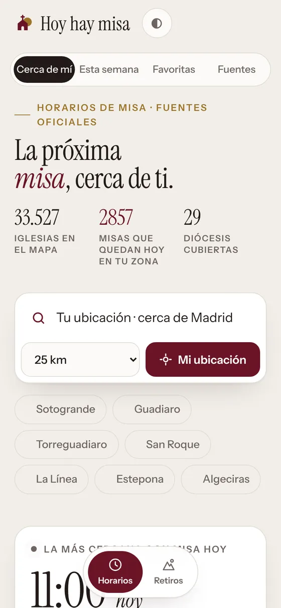
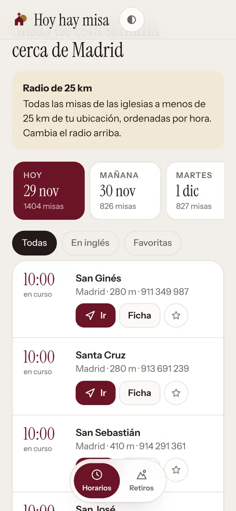
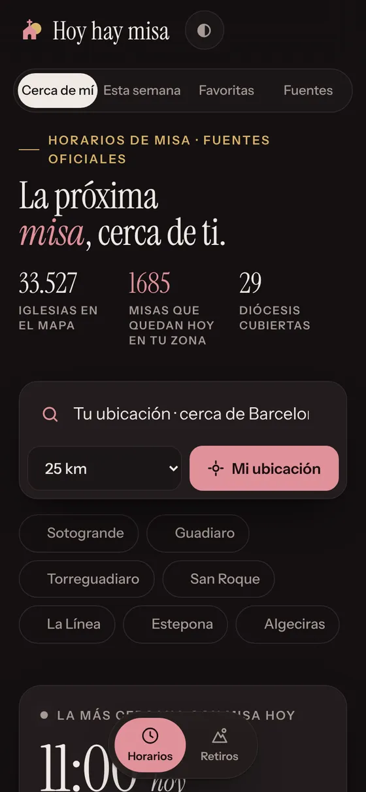
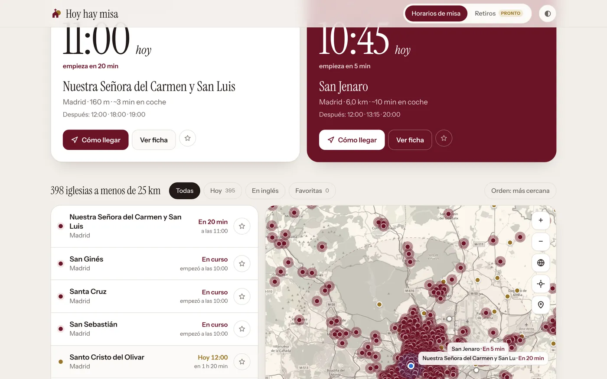

Cerca de mí
Las misas que empiezan ahora a tu alrededor, ordenadas por la que te da tiempo a llegar.
Abre, mira y llega. Hoy hay misa te dice qué iglesia tiene la siguiente misa, cuál alcanzas a tiempo y a qué hora es el domingo, estés donde estés.

Las misas que empiezan ahora a tu alrededor, ordenadas por la que te da tiempo a llegar.
Planifica el domingo, la víspera o un festivo. Horarios de invierno y verano incluidos.

Guarda tus iglesias de siempre. De noche, la pantalla no deslumbra en el templo.

Mueve el mapa y aparecen las iglesias de esa zona. Donde la diócesis publica horarios, los ves al momento; en el resto, te llevamos a su web o a misas.org para consultarlo.

Leemos cada día los buscadores y listados que publican las diócesis españolas.
Completa el mapa con las iglesias del resto de España, con su horario cuando lo tiene.
Cada iglesia lleva a su fuente, para que puedas comprobarlo antes de salir de casa.
Añádela a tu pantalla de inicio y tenla a mano como una app más.
Abrir Hoy hay misa